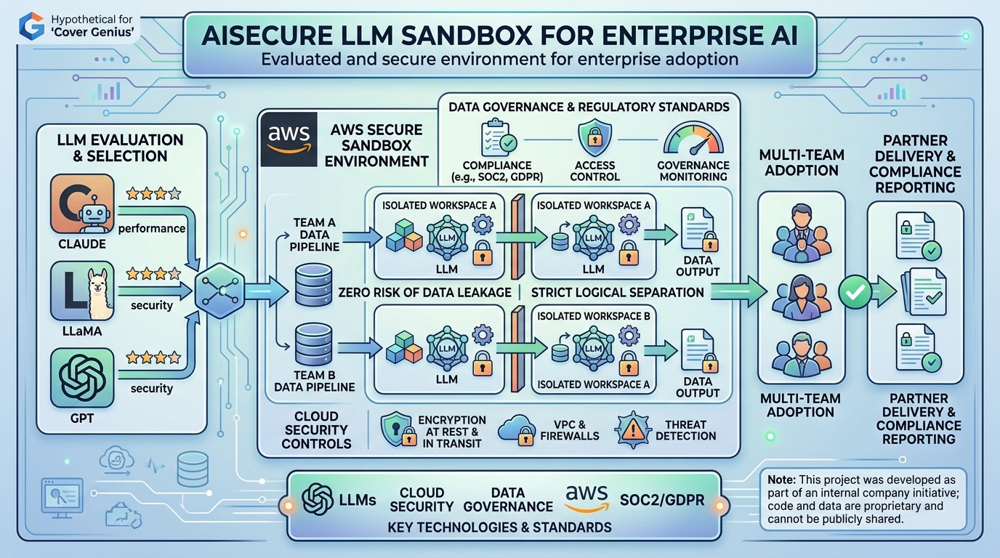

A selection of work across insurtech, healthcare and analytics, from production data platforms to academic and personal builds.
 Cover Genius · Insurtech
Cover Genius · Insurtech
Automated Partner Reporting with DBT & Airflow
Standardized the monthly reporting platform with DBT models that transform terabytes of transactional data and automate complex tax and compliance calculations. Built Apache Airflow DAGs that deliver data to partners on daily, bi-weekly and annual schedules, with encryption for data in transit. Managed database lifecycles from dev/test to production for new product launches.
Note: This project was developed as part of an internal company initiative; code and data are proprietary and cannot be publicly shared.

Cover Genius · AI
Secure LLM Sandbox for Enterprise AI
Evaluated leading LLMs, including Claude, LLaMA and GPT, against the organization's needs, then designed a secure sandbox for adopting AI across teams. The environment was built to keep sensitive and partner data isolated, with zero risk of data leakage, while staying within regulatory and governance standards.
Note: This project was developed as part of an internal company initiative; code and data are proprietary and cannot be publicly shared.
 Healthcare · Compliance
Healthcare · Compliance
CMS Data Integration
Collaborated with the U.S. federal agency CMS to securely access and integrate sensitive patient data. Designed and implemented a HIPAA-compliant sandbox architecture and worked with the cybersecurity team to prepare the SOC 2 report. Established secure data pipelines from government servers, developed key healthcare metrics such as RAF scores and cost-to-patient analyses, and contributed to building a SaaS product that streamlined healthcare data management and compliance.
Note: This project was developed as part of an internal company initiative; code and data are proprietary and cannot be publicly shared.
 Healthcare · BI
Healthcare · BI
Power BI Dashboard Embedded in EMR and CRM Systems
Designed and deployed interactive Power BI dashboards using M language, DAX, and advanced data modeling, fully embedded within EMR and CRM platforms. Collaborated with the development team to ensure seamless integration and real-time data accessibility. Implemented row-level and role-based security, plus automated monitoring and alert systems for refresh failures, data flow issues, and security events using Power Automate, Python, and Spark notebooks, ensuring reliability and compliance in a healthcare environment.
Note: This project was developed as part of an internal company initiative; code and data are proprietary and cannot be publicly shared.
 Healthcare · Cloud
Healthcare · Cloud
Cloud Integration and Microsoft Fabric Setup
Designed and implemented a complete Microsoft Fabric infrastructure to support enterprise BI workloads. Developed production-ready data pipelines, configured multiple staging workspaces, and integrated version control in Power BI using Git and Azure DevOps. Established cloud event triggers in Microsoft Azure, adopted Direct Lake for fast-growing models, and built a centralized database using a modular architecture for scalable and robust development. Additionally, implemented security policies and developed cloud modules to ensure compliance and operational efficiency.
Note: This project was developed as part of an internal company initiative; code and data are proprietary and cannot be publicly shared.
 Marketing · Automation
Marketing · Automation
Mailchimp Data-Driven Marketing Automation
Collaborated with marketing and analytics teams to develop a data-driven marketing automation solution using Mailchimp. Created scripts to automatically tag users based on predefined business rules, enabling targeted and personalized marketing campaigns. Integrated Mailchimp with internal databases to securely sync user data, tags, and email updates, ensuring accurate and automated communication throughout user onboarding and engagement cycles.
Note: This project was developed as part of an internal company initiative; code and data are proprietary and cannot be publicly shared.